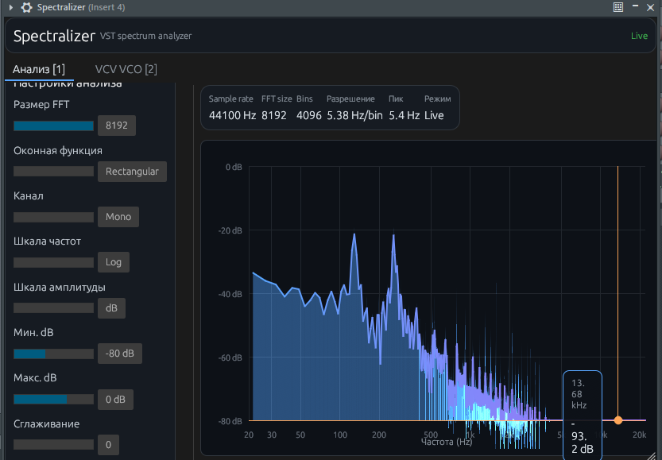

Анализ
FFT, окна, mono/L/R, log/dB, сетка, пик, гармоники, crosshair с частотой и уровнем.
 Spectralizer
Spectralizer
NIH-plug · egui
Real-time спектроскоп на дорожке. Аудио проходит без обработки (analyzer / pass-through). Пока играет транспорт — спектр обновляется; на Stop остаётся последний кадр. Для файлов вне DAW есть веб и Desktop.

FFT, окна, mono/L/R, log/dB, сетка, пик, гармоники, crosshair с частотой и уровнем.
Модель partials с того же спектра: fundamental, V/Oct, таблица, копирование CSV.
| Формат | Где работает |
|---|---|
| VST3 | FL Studio, Reaper, Cubase, Ableton, Studio One… |
| CLAP | Bitwig, Reaper 7+ и хосты с CLAP |
Подробная установка — на странице Установка.